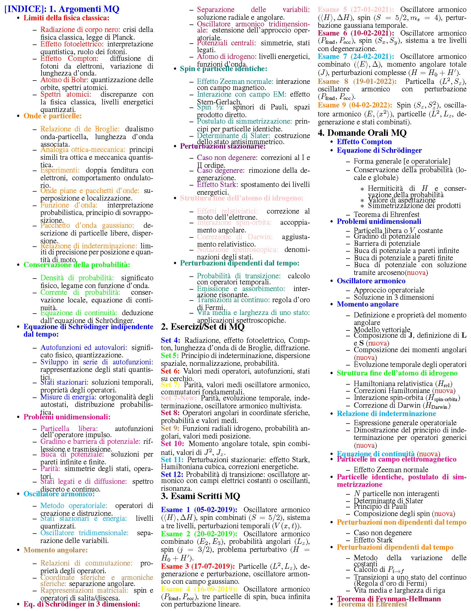

Indice Completo (Formato Immagine)

Riassunti
In questa sezione trovi due link utili per lo studio della Meccanica Quantistica:
-
📄 MQ.pdf (116 pagine)
Riassunto chiaro con basi di algebra lineare, oscillatore armonico, momento angolare, atomo di idrogeno, sistemi composti e introduzione ai quantum bits. Testo a cura di Leonardo Castellani (2023). -
📄 Appunti-MQ.pdf (299 pagine)
Appunti esaustivi del corso di MQ a Roma Tre: trattazione chiara e completa di principi, dimostrazioni e teoria, con grafica migliorata. A cura di ex-studenti (2024). -
📄 AppuntiEdoHD (249 pagine, 2024) - Vai alla pagina
Raccolta ordinata e ad alta risoluzione delle pagine scritte a mano da Edo (2024), utilissima per seguire passo passo teoria, dimostrazioni e svolgimenti del corso. Il download è disponibile nella pagina dedicata. -
📄 BibbiaAleHD (77 pagine, 2025) - Vai alla pagina
Raccolta ordinata e ad alta risoluzione delle pagine scritte a mano da Ale (2025), aggiornata rispetto alla versione 2024. Strutturata per studio e allenamento come BibbiaEdoHD.
Argomenti di Meccanica Quantistica
| 1. Limiti della fisica classica: | 8. Eq. di Schrödinger in 3 dimensioni: |
2. Onde e particelle:
|
9. Spin: |
| 3. Eq. di Schrödinger indipendente dal tempo: | 10. Particelle identiche: |
| 4. Problemi unidimensionali: | 11. Composizione di momenti angolari: |
| 5. Operatori e spazi vettoriali: | 12. Perturbazioni stazionarie: |
| 6. Postulati della meccanica quantistica: | 13. Struttura fine dell’atomo di idrogeno: |
| 7. Momento angolare: | 14. Perturbazioni dipendenti dal tempo: |
2. Esercizi/Set di MQ
- Autoverifica completa: 21 domande con spiegazioni e rilanci da orale
-
Set 4: Radiazione, effetto fotoelettrico, Davisson-Germer, de Broglie, neutroni termici
Testo
1. Lampadina domestica: quanti fotoni nel visibile (λ ≃ 600 nm) vengono emessi ogni secondo?
2. Effetto fotoelettrico su potassio: potenziale d’arresto 1.91 V per λ=3000 Å e 0.88 V per λ=4000 Å. Calcolare: (a) h (dato e=1.60·10⁻¹⁹ C), (b) W del potassio, (c) frequenza di soglia.
3. Esperimento di Davisson e Germer sulla diffrazione di elettroni da cristallo. % (nel materiale fornito si vede solo il titolo)
4. Granello di polvere: d=10⁻⁶ m, m=10⁻¹⁵ kg, v=10⁻³ m/s. Calcolare λ di de Broglie. Effetti quantistici rilevanti? Motivare.
5. Neutroni termici: mₙ=1.67·10⁻²⁷ kg, T=300 K, reticolo con passo ~Å (10⁻¹⁰ m). Quali effetti si osserveranno? Motivare. (E=3/2 kT, k=1.38·10⁻²³ J/K)
-
Set 5: Indeterminazione, pacchetti d’onda, normalizzazione, valori medi e ΔxΔp
Testo
1. Il microscopio a raggi γ di Heisenberg.
2. Con ΔxΔp ≥ ħ/2, assumere pr ≃ ħ per l’elettrone nell’idrogeno (semi-classico, orbite circolari). Stimare energia minima e raggio atomico.
3. Pacchetto d’onda ψ(x)=(1/2π)e^{ik₀x}: (a) Δx da |ψ|²; (b) φ(k) e Δk; (c) evoluzione ψ(x,t) e dispersione a tempo t.
4. Quali ψ(x) descrivono stati fisici? (a) N e^{ikx}; (b) N sin(kx) per |x|<π/k e 0 altrove; (c) N/√(x²+a²). Calcolare le normalizzazioni.
5. Caso (c): probabilità nelle regioni [0,a], [a,2a], [-a,a]. Probabilità di trovare la particella in x=a.
6. Valori medi di x̂ e p̂ e scarti quadratici medi per: (a) plane wave (|x|≤L, L→∞); (b) N sin(px/ħ) su [0,L=2πħ/p]; (c) N e^{-x²/2a²}. Per (b)(c) calcolare ΔxΔp e discutere con Heisenberg.
-
Set 6: Buca infinita (valori medi), particella su cerchio, spettro e impulso
Testo
1. Buca infinita V(x)=0 per |x|<a, V=+∞ altrove: (a) ⟨x̂⟩,⟨p̂⟩,⟨Ĥ⟩ e Δ; Heisenberg; dipendenza dal tempo. (b) ψ=(i/2)ψ₁ + Bψ₂: normalizzare; prob. E=E₂ (e E=E₁, E=E₄); ⟨x̂⟩,⟨Ĥ⟩,⟨p̂⟩ e dipendenza dal tempo.
2. Particella libera su cerchio (0≤x≤2πL): autovalori Eₙ e autofunzioni uₙ(x). (a) normalizzazione/ortogonalità; (b) autofunzioni di p̂=(ħ/i)d/dx e autovalori; (c) natura dello spettro; (d) ⟨x̂⟩ in uₙ e interpretazione con |uₙ|²; (e) Ψ=(1/√2)u₁+cu₂: trovare c, impulso determinato?, ⟨p̂⟩.
-
Set 7: (vecchio) - sostituito da Set 7-New
Testo
% Set 7 è incorporato in Set 7-New (qui evitiamo duplicati).
-
Set 7-New: Parità in buca, superposizioni in buca, oscillatore, ladder operators, commutatori
Testo
1. Buca infinita (|x|≤a/2): ψ=√(2/3)ψ₂ + (i/√3)ψ₃ con φ₂=√(2/a)sin(2πx/a), φ₃=√(2/a)cos(3πx/a). (a) parità: autostati? ⟨P̂⟩, ΔP e tempo. (b) P(t) in [0,a/2], max/min e tempi. (c) probabilità in [-a/2,0].
2. Buca infinita larghezza a: ψ(x,0)=-(i/√3)φ₁ + √(1/2)φ₄ + (i/√6)φ₆. (a) normalizzata? (b) ψ(x,t); (c) a che valore è normalizzata; (d) ⟨Ĥ⟩ e scarto quadratico medio a t=0 e a t generico.
3. Oscillatore lineare 1D: valori medi di x̂ e p̂ e scarti quadratici; discussione con Heisenberg; ⟨T⟩ e ⟨V⟩ e confronto col classico.
4. Oscillatore armonico: Ĥ=ħω(a†a+1/2), [a,a†]=1; a|uₙ⟩=cₙ|uₙ₋₁⟩, a†|uₙ⟩=dₙ|uₙ₊₁⟩. (a) cₙ,dₙ. (b) |u⟩=a₀|u₀⟩+a₁|u₁⟩+a₂|u₂⟩: ⟨Ĥ⟩ e ⟨x̂⟩. (c) a₀=1/√2, a₁=i√(1/2): trovare a₂. (d) indeterminazione x̂,p̂. (e) ψ(0)=|u⟩: ψ(t), ⟨Ĥ⟩ e ⟨x̂⟩.
5. Commutatori: (a) [x̂,p̂ⁿ], [x̂ᵐ,p̂]; (b) [f(x̂),p̂], [x̂,g(p̂)], usando [x̂,p̂]=iħ e azione su ψ(x) o φ(p).
-
Set 8: Operatori angolari (sferiche), matrici per l=2, stati e valori medi
Testo
1. Espressioni di Lz, L± e L² in coordinate polari sferiche.
2. Con L±|lm⟩ e c±(l,m): matrici di L², Lz, Lx, Ly per l=2.
3. |Ψ⟩=(1/a)(2|1,1⟩+|1,0⟩+2i|1,−1⟩): trovare a; poi (a) P(Lz=ħ,0,−ħ); (b) ⟨Lz⟩; (c) ⟨Ly⟩; (d) P(Lx=ħ).
4. Ψ(r,θ,φ)=√(5/8π)(sin2θ cosφ − (i/√2) sin²θ sin2φ) f(r). Con Y_{2,+2}, Y_{2,+1} dati: (a) P(Lz=+2ħ,0,−ħ); (b) ⟨L²⟩, ⟨Lz⟩, ⟨Lx⟩, ⟨Ly⟩.
-
Set 9: Idrogeno (ψ100, radiali, stato p n=2), Stern-Gerlach
Testo
1. ψ100=√(1/πa₀³)e^{−r/a₀}, a₀=4πϵ₀ħ²/(me²): (a) r di massima densità di probabilità; (b) ⟨r⟩ (posizione media).
2. Costanti di normalizzazione delle funzioni radiali idrogenoidi per n=1,2,3.
3. Determinare stato dell’idrogeno sapendo: (a) stato p con n=2; (b) P(Lz=0)=0 e ⟨Lz⟩=0; (c) P(primo quadrante 0≤φ≤π/2)=25%.
4. Stern-Gerlach: selezionato spin “up” lungo B. (a) B=B₀ ẑ: prob. di Sz=±ħ/2. (b) B nel piano xz: (i) prob. Sz=±ħ/2; (ii) se misura Sx; (iii) ⟨Sz⟩. Discussione in funzione dell’angolo polare θ di B.
-
Set 10: Spin in campo B, J=L+S, accoppiamento l=1 con s=1/2, stato s=3/2,l=1
Testo
1. Spin 1/2 in campo magnetico B: (a) Hamiltoniana; (b) da |+⟩ (Sz=+ħ/2) a tempo t: (i) stato; (ii) P(|−⟩ dopo τ); (iii) τ per massimo; (iv) direzione di B per certezza di |−⟩.
2. J=L+S: dimostrare (a) [Ji,Jj]=iħεijkJk; (b) [Ji,L²]=0=[Ji,S²]=[J²,L²]=[J²,S²].
3. Spin 1/2 con l=1: autovalori/autostati |j,mj⟩ di J²,Jz in funzione di |ml,±1/2⟩ (base L²,Lz,S²,Sz).
4. Stato prodotto (s=3/2,l=1): |ψ⟩=√(3/5)|3/2,−3/2;1,−1⟩ + √(2/5)|3/2,−3/2;1,0⟩. (a) misure di J² e Jz (valori e probabilità). (b) misura simultanea Sz e Lz (valori e probabilità). Richiamo su J±.
-
Set 11: Perturbazioni (αx³), Stark, oscillatore carico in E costante, buca con Hp=εE1 x/L
Testo
1. H=p²/(2m)+½mω²x²+αx³. Spettro energetico al I ordine perturbativo in α. (x=√(ħ/2mω)(a+a†))
2. Effetto Stark per atomo idrogenoide: correzioni al I ordine di E1 ed E2.
3. Oscillatore armonico 1D carico in campo elettrico costante: (a) correzioni energie I e II ordine; (b) risoluzione esatta con cambio variabile + confronto.
4. Buca infinita (0,L): correzioni al I ordine per fondamentale e primo eccitato con Hp=εE1 x/L, E1 energia fondamentale non perturbata.
-
Set 12: Probabilità di transizione (E costante su τ, Ax²e^{-bt}, H in campo sinusoidale)
Testo
1. Oscillatore armonico 1D carico (m,ω,q) in campo elettrico costante per durata τ: al I ordine P transizione (a) 0→1; (b) 1→2 e 1→3. (x=√(ħ/2mω)(a+a†))
2. Oscillatore fondamentale con perturbazione V(x,t)=A x² e^{−bt} da t=0: stati raggiungibili e probabilità al I ordine dopo lungo tempo.
3. Idrogeno fondamentale in campo E=E0 sin(ωt) lungo z: (a) ω di risonanza al primo eccitato; (b) l e m raggiungibili; (c) probabilità in risonanza al I ordine. Verificare applicabilità per E0≈10⁶ V/m. Dati: ħ=1.05·10⁻³⁴ J·s; a0=5.3·10⁻¹¹ m.
3. Esami Scritti MQ
-
Esame 1 (05-02-2019): Oscillatore armonico, spin combinati, ...
Testo
Esercizio 3. Oscillatore armonico con \(\langle H\rangle=\frac{3}{2}\hbar\omega\) e \(\Delta H=\frac{1}{\sqrt{2}}\hbar\omega\). Inoltre una misura di energia non può dare un valore maggiore di \(3\hbar\omega\). (a) Risultati e probabilità. (b) Stato a \(t=0\) con coefficienti reali positivi. (c) \(\langle H\rangle\), \(\langle x\rangle\) e scarti quadratici medi all’istante \(t\). Si ricordi \(x=\sqrt{\frac{\hbar}{2m\omega}}(a+a^\dagger)\).
Esercizio 4. Due particelle di spin \(s_1=2\), \(s_2=3\) in configurazione di spin totale \(s=5\) e \(m_s=+4\). (a) Valori misurabili di \(s_{1z}\), \(s_{2z}\) e probabilità. (b) Probabilità che \(s_{1z}\le 0\). Si ricordi \(S_\pm|s,m_s\rangle=\hbar\sqrt{s(s+1)-m_s(m_s\pm1)}|s,m_s\pm1\rangle\).
Esercizio 5. Perturbazioni: \(E_1=E_2\neq E_3\). Trovare al I ordine autovalori/autovettori di \(H=H_0+\varepsilon h_1\), con \(h_1=\begin{pmatrix}1&2&1\\2&-1&2\\1&2&0\end{pmatrix}\).
Esercizio 6. Oscillatore armonico nello stato fondamentale a \(t=-\infty\) con perturbazione \(V(x,t)=A\delta(x-ct)\). Probabilità di transizione al primo stato eccitato a \(t=+\infty\) (I ordine). Dati: \(\psi_0,\psi_1\), \(\alpha^2=\frac{m\omega}{\hbar}\).
-
Esame 2 (20-02-2019): Oscillatore armonico combinato, ...
Testo
Esercizio 3. Oscillatore armonico: \( |\psi(0)\rangle=\frac{1}{\sqrt{5}}\bigl[|E_1\rangle+i\sqrt{2}|E_2\rangle+(1-i)|E_3\rangle\bigr]\). (a) Normalizzazione. (b) \(\langle E\rangle\) e scarto quadratico medio. (c) \( |\psi(t)\rangle\) e \(\langle \hat p\rangle(t)\), con \(\hat p=i\sqrt{\frac{\hbar m\omega}{2}}(a^\dagger-a)\).
Esercizio 4. Stato \( |\psi\rangle=\frac{1}{\sqrt{14}}\bigl[|1,+1\rangle+2|1,0\rangle+3i|1,-1\rangle\bigr]\). (a) Autostato di \(L^2\)? e di \(L_z\)? (b) Probabilità risultati di \(L_z\): \(+\hbar,0,-\hbar\). (c) \(\langle L_z\rangle\). (d) \(\langle L_x\rangle\). (e) Probabilità di ottenere \(+\hbar\) misurando \(L_x\). Si ricordi \(L_x=\frac{\hbar}{\sqrt{2}}\begin{pmatrix}0&1&0\\1&0&1\\0&1&0\end{pmatrix}\).
Esercizio 5. Elettrone in orbitale \(p\) con \(j=\frac{3}{2}\), \(m_j=+\frac{1}{2}\). Probabilità di trovare lo spin “up”. Si ricordi \(J_{\pm}|j,m_j\rangle=\hbar\sqrt{j(j+1)-m_j(m_j\pm1)}|j,m_j\pm1\rangle\).
Esercizio 6. \(H=H_0+H'\), con \(H_0=\mathrm{diag}(\hbar\omega/2,3\hbar\omega/2,5\hbar\omega/2)\) e \(H'=\begin{pmatrix}0&ia&0\\-ia&0&0\\0&0&0\end{pmatrix}\). Correzioni all’energia al primo ordine perturbativo non nullo; discutere lo splitting e confrontare con soluzione esatta per \(a\ll\hbar\omega\).
-
Esame 3 (17-07-2019): Particelle (L², Lz), degenerazione e perturbazione ...
Testo
Esercizio 1. Due particelle nello stato \(|\psi\rangle=|1,1\rangle|1,-1\rangle\). Possibili valori di \(L^2\) e \(L_z\) (con \(L=L_1+L_2\)) e relative probabilità.
Esercizio 2. \(H=H_0+H'\) con \(H_0=\mathrm{diag}(\hbar\omega,\hbar\omega,2\hbar\omega)\) e \(H'=a\begin{pmatrix}-1&i\sqrt{2}&0\\-i\sqrt{2}&0&0\\0&0&0\end{pmatrix}\), \(a\ll\hbar\omega\). Autostati e autovalori al I ordine; discussione.
Esercizio 3. Oscillatore armonico nel secondo stato eccitato con campo elettrico \(\mathcal{E}(t)=\mathcal{E}_0 e^{-t^2/\tau^2}\) a partire da \(t=-\infty\). Stati di transizione e probabilità al I ordine. Si ricordi \(x=\sqrt{\frac{\hbar}{2m\omega}}(a+a^\dagger)\).
-
Esame 4 (16-09-2019): Oscillatore armonico, tre particelle di spin, ...
Testo
Esercizio 3. Oscillatore armonico a \(t=0\) con: (a) \(P_0=0.75\), \(P_1=0.25\); (b) \(\langle x\rangle=0\); (c) \(\langle p\rangle<0\). Calcolare \(\langle x\rangle(t)\) e in particolare per \(t=\pi/(2\omega)\). Si ricordi \(x=\sqrt{\frac{\hbar}{2m\omega}}(a+a^\dagger)\), \(p=i\sqrt{\frac{\hbar m\omega}{2}}(a^\dagger-a)\).
Esercizio 4. Determinare i 4 stati con spin totale \(3/2\) formati da 3 particelle con spin \(1/2\). Si ricordi \(J_\pm|j,m_j\rangle=\hbar\sqrt{j(j+1)-m_j(m_j\pm1)}|j,m_j\pm1\rangle\).
Esercizio 5. Particella in buca infinita \(0<x<L\). Correzioni al I ordine per livello fondamentale e primo eccitato con perturbazione \(H_p=\varepsilon E_0\,\frac{x}{L}\), dove \(E_0\) è l’energia fondamentale non perturbata.
-
Esame 5 (27-01-2021): Oscillatore armonico, spin (S=5/2), perturbazione gaussiana ...
Testo
Esercizio 1. Oscillatore armonico con \(\langle H\rangle=\frac{3}{2}\hbar\omega\) e \(\Delta H=\frac{1}{\sqrt{2}}\hbar\omega\). Inoltre una misura di energia non può dare un valore maggiore di \(3\hbar\omega\). (a) Risultati e probabilità. (b) Stato a \(t=0\) con coefficienti reali positivi. (c) Valore di aspettazione di \(H\) e posizione all’istante \(t\).
Esercizio 2. Due particelle con \(s_1=2\), \(s_2=3\), stato totale \(s=5\) e \(m_s=+4\). (a) Misura simultanea delle componenti \(z\) degli spin e probabilità. (b) Probabilità che la componente \(z\) dello spin della particella 1 sia \(\le 0\).
Esercizio 3. Oscillatore armonico fondamentale a \(t\sim-\infty\) con perturbazione \(V(t)=-qEx\,e^{-t^2/\tau^2}\). Probabilità al I ordine di trovarsi in \(|n\rangle\) a \(t\sim+\infty\).
-
Esame 6 (10-02-2021): Oscillatore armonico, spin (Sx, Sy), sistema a tre livelli ...
Testo
Esercizio 1. Oscillatore armonico a \(t=0\): (a) \(P_0=0.75\), \(P_1=0.25\); (b) \(\langle x\rangle=0\); (c) \(\langle p\rangle<0\). Calcolare valore medio e scarto quadratico medio di \(x\) a tempo \(t\) e in particolare per \(t=\pi/(2\omega)\).
Esercizio 2. Particella con spin 1 nello stato \( |\Psi\rangle=\frac{1}{\sqrt{14}}(2,1,3i)^T\). Probabilità che una misura di \(S_x\) dia \(+\hbar\), \(0\), \(-\hbar\). Valore medio di \(S_y\).
Esercizio 3. \(E_1=E_2\neq E_3\). Trovare al I ordine autovalori/autovettori di \(H=H_0+\varepsilon h_1\), con \(h_1=\begin{pmatrix}1&2&1\\2&-1&2\\1&2&0\end{pmatrix}\).
-
Esame 7 (24-02-2021): Oscillatore armonico combinato, momento angolare totale, ...
Testo
Esercizio 1. Stato iniziale: \( |\psi(0)\rangle=|E_1\rangle+i\sqrt{2}|E_2\rangle+(1-i)|E_3\rangle\), con \(H|E_n\rangle=E_n|E_n\rangle\). (a) \(\langle E\rangle\) e scarto quadratico medio. (b) \(\langle p\rangle(t)\).
Esercizio 2. Atomo con nucleo di spin \(s_N=2\) ed elettrone nello stato \(3d\). (a) Possibili valori di \(J^{(a)}\) e numero di stati permessi. (b) Se \(J^{(a)}_z=-9\hbar/2\): (i) probabilità per \(s_{ez}=\pm\hbar/2\); (ii) possibili valori di \(L_{ez}\) e probabilità.
Esercizio 3. \(H=H_0+H'\), con \(H_0=\mathrm{diag}(\hbar\omega/2,3\hbar\omega/2,5\hbar\omega/2)\) e \(H'=\begin{pmatrix}0&ia&0\\-ia&0&0\\0&0&0\end{pmatrix}\). Correzioni all’energia al primo ordine perturbativo non nullo; discutere splitting e confronto con soluzione esatta per \(a\ll\hbar\omega\).
-
Esame 8 (19-01-2022): Particella (L², Sz), oscillatore armonico con perturbazione ...
Testo
Esercizio 1. Considerare una particella con spin 1/2 con Hamiltoniana \(H = A L_z + B S_z\), con \(\ell=1\), \(j=3/2\), \(m_j=1/2\). (a) Decomposizione su autostati di \(L^2,L_z,S^2,S_z\). (b) Evoluzione temporale e scrittura su \(J^2,J_z,L^2,S^2\). (c) Tempo di ritorno allo stato iniziale.
Esercizio 2. Oscillatore armonico: \(P_0=0.75\), \(P_1=0.25\), \(\langle x\rangle=0\), \(\langle p\rangle<0\). Calcolare \(\langle x\rangle(t)\).
Esercizio 3. Oscillatore armonico nello stato fondamentale per \(t\to-\infty\) con perturbazione \(V(t)=-qEx\,e^{-t^2/\tau^2}\). Probabilità al I ordine di trovarsi in \(|n\rangle\) per \(t\to+\infty\).
-
Esame 9 (04-02-2022): Spin (Sz), oscillatore armonico (E, ⟨x²⟩), particelle degenerazione ...
Testo
Esercizio 1. Particella con spin 1 nello stato \(|\Psi\rangle = 2\sqrt{3}\,|+1\rangle_x + 3i\,|0\rangle_x + 2\,|-1\rangle_x\). (a) \(\langle S_x\rangle\). (b) Valori e probabilità di una misura di \(S_z\). (c) \(\langle S_z\rangle\).
Esercizio 2. Oscillatore armonico: misure di energia \( \frac{3}{2}\hbar\omega, \frac{5}{2}\hbar\omega, \frac{7}{2}\hbar\omega\) con \(\langle E\rangle=\frac{8}{3}\hbar\omega\) e \(\langle m\omega x^2\rangle=\frac{5}{3}\hbar\). Ricostruire lo stato (coefficienti reali, coeff. di \(7/2\,\hbar\omega\) positivo).
Esercizio 3. Due particelle: \(|\Psi(0)\rangle = |1,1\rangle|1,-1\rangle\). (a) Possibili risultati per \(L^2\) e \(L_z\). (b) Con \(H=\frac{L^2}{2I}+\lambda\,\mathbf{L}_1\cdot\mathbf{L}_2\), determinare \(|\Psi(t)\rangle\) e \(\langle H\rangle\). (c) Ripetere (a) a tempo generico.
Formulario. Armoniche sferiche; operatori per oscillatore armonico; matrici per \(j=1/2\) e \(j=1\).
-
Esame 10 (09-01-2025): ⟨H⟩ e ΔH, orbitale p (j=1/2), perturbazione da campo elettrico ...
Testo
Esercizio 1. Oscillatore armonico con \(\langle H\rangle=\frac{3}{2}\hbar\omega\) e \(\Delta H=\frac{1}{\sqrt{2}}\hbar\omega\). Inoltre una misura di energia non può dare un valore maggiore di \(3\hbar\omega\). (a) Risultati e probabilità della misura di energia. (b) Stato a \(t=0\) nella base degli autostati (coefficienti reali positivi). (c) \(\langle H\rangle\), \(\langle x\rangle\) e scarti quadratici medi all’istante \(t\); discussione.
Esercizio 2. Un elettrone di un orbitale \(p\) è in uno stato con momento angolare totale \(j=1/2\). Probabilità di trovare lo spin “down” se \(m_j=+1/2\); e se \(m_j=-1/2\).
Esercizio 3. Particella di massa \(m\) e carica \(q\) con forza elastica + campo elettrico \(\mathcal{E}\) (debole). Correzioni perturbative prodotte dal campo elettrico ai livelli di energia e agli stati al I ordine.
-
Esame 11 (16-04-2024): Momento angolare, buca (0,a) con V(x)=αx, oscillatore armonico (36%/64%) ...
Testo
Esercizio 1. Stato \(|\Psi\rangle=\frac{1}{\sqrt{2}}|1,-1\rangle+\frac{1}{\sqrt{3}}|1,0\rangle+\frac{i}{\sqrt{6}}|0,0\rangle\). (a) Probabilità per una misura di \(L_z\) (risultati indicati: \(2\hbar,-\hbar,0\hbar\)). (b) Valori di aspettazione di \(L_z\), \(L^2\) e \(L_x\). (c) Se la misura di \(L_z\) dà 0 (in unità di \(\hbar\)), forma più generale dello stato subito dopo la misura.
Esercizio 2. Particella di massa \(m\) confinata in \((0,a)\) sull’asse \(x\) con perturbazione \(V(x)=\alpha x\). Correzioni al I ordine per tutti i livelli e al II ordine per i primi due livelli.
Esercizio 3. Oscillatore armonico 1D: probabilità 36% che \(E=3\hbar\omega/2\) e 64% che \(E=5\hbar\omega/2\). Inoltre \(\langle x\rangle\) ha un minimo per \(t=0\). Trovare il vettore di stato all’istante \(t\); calcolare \(\langle p\rangle\) e l’energia in funzione di \(t\).
-
Esame 12 (10-01-2022): Stato in 3D (L², Lz), due particelle (L1z, L2z), perturbazione stazionaria (HO + αx) ...
Testo
Esercizio 1. Sia dato il seguente stato di un sistema \(\psi(x,y,z,t=0)=N\,e^{-(x^2+y^2+z^2)/a^2}\,(x+y+z)\). (a) Quali valori può dare una misura di \(L^2\) e \(L_z\) e con che probabilità? (b) Sia \(H=-\lambda L_z\), determinare \(\langle L_z\rangle(t)\) e \(\langle L_x\rangle(t)\).
Esercizio 2. Lo stato di un sistema di due particelle è rappresentato, nella base \(|l,m;\,l_1,l_2\rangle\) degli autostati di \(L^2\), \(L_z\), \(L_1^2\), \(L_2^2\), dal vettore \(|\phi\rangle=\alpha\,|1,1;\,1,1\rangle+\beta\,|1,1;\,1,0\rangle\). Quali sono i possibili valori di una misura di \(L_{1z}\), \(L_{2z}\), \(L_1^2\), \(L_2^2\) e con quali probabilità possono essere ottenuti?
Esercizio 3. Si consideri un sistema unidimensionale la cui Hamiltoniana è data da \(H=\frac{p^2}{2m}+\frac{m\omega^2}{2}x^2+\alpha x\), dove \(V=\alpha x\) è una perturbazione stazionaria. Determinare lo stato fondamentale al primo ordine perturbativo e le energie dei primi due livelli al secondo ordine perturbativo.
Formulario. Armoniche sferiche; operatore \(a\) per oscillatore armonico unidimensionale; matrici per \(j=1/2\) e \(j=1\).
👉 Per visualizzare le soluzioni reali fino al Set 10 e tentativi coerenti per i Set 11 e 12, scarica il seguente manoscritto(che pesa troppo e costa metterlo nel sito quindi è solo una decorazione):
📘 ManuscriptMQ2025.pdf - Soluzioni complete (PDF)
Domande Orali MQ pre-2025
- Effetto Compton
- Equazione di Schrödinger:
- Forma generale [e operatoriale]
- Conservazione della probabilità (locale e globale)
- Equazione di continuità (nuova)
- Hermiticità di \( H \) e conservazione della probabilità
- Valore di aspettazione
- Simmetrizzazione dei prodotti
- Teorema di Ehrenfest
- Soluzione dell’equazione di Schrödinger:
- Stati stazionari
- Proprietà autofunzioni dell’energia
- Problemi unidimensionali:
- Particella libera o \( V \) costante
- Gradino di potenziale
- Barriera di potenziale
- Buca di potenziale a pareti infinite
- Buca di potenziale a pareti finite
- Buca finita: quantizzazione in forma arcoseno
- Oscillatore armonico operatoriale
- Postulati della meccanica quantistica
- Osservabili compatibili (caso degenere e non degenere)
- Relazione di indeterminazione:
- Espressione generale operatoriale
- Stato con indeterminazione minima
- Dimostrazione del principio di indeterminazione per operatori generici (nuova)
- Momento angolare:
- Momento angolare \( L_x, L_y, L_+, L_- \)
- Modello vettoriale
- Evoluzione temporale degli operatori
- Composizione di \( J \), definizione di \( L \) e \( S \) (nuova)
- Equazione di Schrödinger in 3 dimensioni
- Oscillatore armonico in 3 dimensioni
- Potenziale centrale, soluzione con \( u = R r \)
- Struttura fine dell’atomo di idrogeno:
- Hamiltoniana relativistica \( H_{\text{rel}} \)
- Correzioni Hamiltoniane
- Interazione spin-orbita \( H_{\text{spin-orbita}} \)
- Correzione di Darwin \( H_{\text{Darwin}} \)
- Composizione dei momenti angolari
- Particelle identiche e postulato di simmetrizzazione
- Composizione degli spin (nuova)
- N particelle non interagenti, determinante di Slater, principio di Pauli
- Perturbazioni non dipendenti dal tempo:
- Caso non degenere
- Effetto Stark
- Perturbazioni dipendenti dal tempo:
- Metodo della variazione delle costanti
- Perturbazione periodica
- Transizioni a uno stato del continuo (Regola d'oro di Fermi)
- Probabilità che lo stato rimanga invariato, vita media, larghezza di riga
- Effetto Zeeman normale
- Teorema di Feynman-Hellmann
- Kummer-Laplace(rara)
Domande Orali MQ 2025
- Barriera di potenziale (confronto MA-CL)
- Discussione termine spin-orbita nella struttura fine dell’atomo di idrogeno
- Momento angolare di due fermioni legati
- Teoria delle perturbazioni stazionarie degenere
- Transizioni tra livelli atomici con pulsazione di Bohr
- Conservazione della probabilità globale e locale (equazione di continuità)
- Sistemi di particelle identiche
- Perturbazioni stazionarie
- Profilo generico di potenziale
- Osservabili compatibili
- Osservabili commutano se e solo se sono compatibili
- Step di potenziale
- Perturbazioni dipendenti dal tempo
- Principio di Heisenberg
- Pacchetto d’onda a indeterminazione minima
- Coefficienti di Clebsch-Gordan
- Gradino di potenziale
- Composizione di momenti angolari totali
Ruota della Fortuna • Modalità Studio
Riordina Domande Orali MQ
Gli argomenti sono stati ordinati inizialmente in base alla loro struttura tematica. È possibile riordinarli utilizzando una delle seguenti metriche:
- Percentuale: Riordina in base alla frequenza stimata dell'argomento
- Dettaglio: Riordina in base alla lunghezza descrittiva
- Alfabetico: Riordina in ordine alfabetico
- Casuale: Riordina in modo casuale
Seleziona un criterio di riordinamento: